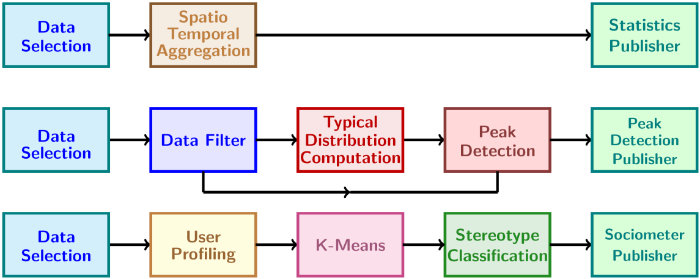
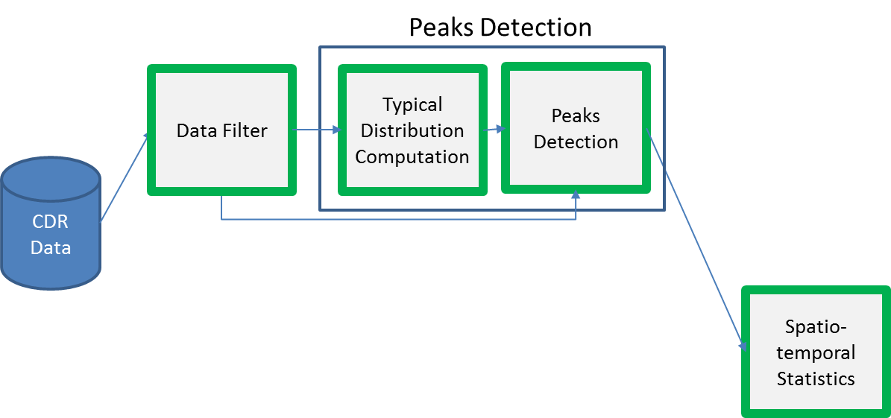

Telecommunication Analytics¶
Introduction¶
The goal of WIND was to design and implement a new application to take better advantage of the new big data approach for mobile applications. The ASAP telecommunications application will show how a number of analytical services describing the mobility of people can be created on the basis of the data collected by the mobile network during routine operation. We developed three modules: the user profiling, the sociometer and the peak detection. Moreover some additional modules are defined and developed in order to build complete workflows going from the data to the publication of the results, as shown in the figure below.
Peak Detection¶
This analysis detects relevant peaks representing an event. This is achieved by comparing the density of population (measured in calls) within a region in a given moment against the expected density for that area at that hour of the day. The overall analysis is decomposed in the Data Filter, the Distribution Computation and the Peak Detection operators. The operators are implemented as Spark applications (using the scala API) and they can be executed by submitting them to a running Spark installation.
The overall calculation is illustrated here:
In more details, the Data Filter operator expects a CDR dataset with the following fields:
- caller id (masked)
- call date (format: yyyy-MM-dd)
- chargable duration
- tower identifier from which the call has initiated
- tower identifier where the call has ended
Then, the process assumes a dataRaw dataset derived from the above and containing the following fields:
- id : tower identifier from which the call has initiated
- hour: the hour of the day (derived by the call date)
- dow: the day of the week (derived by the call date)
- doy: the day of the year (derived by the call date)
- num: the number of calls started in this tower range at this hour of this specific day.
The next step of the process consists in defining the geographical area to analyze and to partition it into a set of regions. The same must be done for the time, where a timeframe is chosen (for instance, a month), partitioned into periods (for instance, days) and then into smaller time slots (for instance, hours). Time slots are described by a parameter T, while the regions that cover the area of analysis are described by a parameter S, both parameters being provided by the user. These two parameters, then, allow defining a spatio-temporal grid, and each observation of an input dataset can be assigned to one of its cells. The number of observations that fall in a cell defines its density. The input data is partitioned into two sets: a training dataset and a test dataset. For both datasets the spatiotemporal grid of densities is computed. The first will be used to compute the densities of a typical period for each region. The second dataset will be then compared against such typical period in order to detect significant deviations.
The Distribution Computation operator requires input generated by the Data Filter step. Based on the densities obtained for each region and each time slot over the training dataset, an expected density value is computed for each region, by averaging the densities measured at the same time slot of all the periods in the time window covered by the dataset. For instance, we might obtain an expected density for each pair (region, hour of the day), i.e., 24 values for each region, assuming 24 one-hour time-slots. The result represents the standard behavior and it is saved in a new dataset named cpBase.
Finally, the Peak Detection operator requires input from the previous steps. For each region and each time-slot, the corresponding density is compared against its expected value: if the difference is significant, an event of form (region, weight, time slot) is produced, representing its spatiotemporal slot and a discretized measure (weight) of how strong was the deviation. In particular, events are detected on the base of three parameters:
- a granularity of deviations: expressed as a percentage relative to the expected density;
- a minimum relative deviation: also expressed as a percentage, used to select significant deviations;
- an absolute minimum deviation: expressed as an integer number, used to discard extreme cases with very low densities.
Run Peak Detection¶
For the Data Filter module, run the following command:
$SPARK_HOME/bin/spark-submit –py-files cdr.py peak_detection/data_filter.py <dataset> <spatial_division> <start_date> <end_date>
- where:
- dataset: The dataset location. Can be any Hadoop-supported file system URI. The expected dataset schema is:
user_id;null;null;start_date;start_time;duration;null;null;null;start_gsm_cell;end_gsm_cell;record_type
spatial_division: File containing the mapping of cells to regions.
start_date: The starting date of the analysis (format: %Y-%m-%d)
end_date: The ending date of the analysis (format: %Y-%m-%d)
The results are stored into the hdfs file: /peaks/hourly_<region>_<start_date>_<end_date> where the <region> is derived by the spatial_division.
For the Distribution Computation module, run:
$SPARK_HOME/bin/spark-submit peak_detection/typical_distribution_computation.py <dataset>
where <dataset> is consisting of tuples containing the following information: <region>,<day_of_week>,<hour_of_day>,<date>,<count>
The results are also stored into hdfs: /peaks/weekly_<region>_<start_date>_<end_date> where the <region>, <start_date> and <end_date> are derived by the name of the dataset.
For the Peak Detection module, run:
$SPARK_HOME/bin/spark-submit peak_detection/peak_detection.py <hourly_presense> <weekly_presense>
- where:
- hourly_presence: The hourly presence dataset consisting of tuples containing the following information: <region>,<day_of_week>,<hour_of_day>,<date>,<count>
- weekly_presence: The weekly presence dataset consisting of tuples containing the following information: <region>,<day_of_week>,<hour_of_day>,<count>
The results are stored into the local file: peaks_<region>_<start_date>_<end_date> where the <region>, <start_date> and <end_date> are derived by the name of the dataset.
User Profiling¶
The spatio temporal profile is an aggregated representation of the presence of a user in a certain area of interest during different pre-defined timeslots. This profile is constructed starting from the CDR data and with reference to a particular spatial respresentation. The CDR spatial coverage describes the distribution of the antennas used by the mobile telecommunications operator on the territory, which can be used to estimate the corresponding coverage. A spatio temporal profile codes the presence of a user in the area of interest in a particular time (or timeslot) identified by the information in the CDR. A spatio-temporal profile codes the presence of a user in the area of interest in a particular time (or timeslot) identified by the information in the CDR. The idea is that if a person makes a call in the area A at time t, it means that he is present in that area at that time.
Run User Profiling¶
Run: $SPARK_HOME/bin/spark-submit –py-files cdr.py sociometer/user_profiling.py <dataset> <spatial_division> <start_date> <end_date>
- where:
- dataset: The dataset location. Can be any Hadoop-supported file system URI. The expected dataset schema is:
user_id;null;null;start_date;start_time;duration;null;null;null;start_gsm_cell;end_gsm_cell;record_type where start_time column is expected to have this format: ‘%Y-%m-%d %X’.
spatial_division: File containing the mapping of cells to regions.
start_date: The starting date of the analysis (format: %Y-%m-%d)
end_date: The ending date of the analysis (format: %Y-%m-%d)
The results are stored into hdfs: /peaks/profiles-<start_week>-<end_week> where start_week and end_week are the starting and the ending week (format: <ISO_year>_<ISO_week>) of the specific time window.
Sociometer¶
It classifies the users using the presence of cellphone users. In particular, it identifies residents, commuters and visitors. K-means identifies the representative profiles, which are then labeled with the mobility behavior categories just described. Several profiles might be associated to the same category, basically representing different facets of the same class of users. The classification phase assigns each spatio-temporal user’s profile to the closest representative profile based on a proper distance measure. The output is the semantic enrichment of the set of users with tags representing the classification for each user.